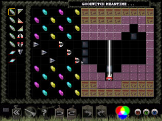

| | |
| | |
| Level | Goodwitch meantime |
| Difficulty | Fright |
| | |
| Author | Alan Carre |
| Pieces | 13 |
| | |
| | |
| | |
|  |
Text Hints |
| | Cryptic | "White x 6 = Composite x 3" |
| Good Hint | "Prism filter-combining is the key" |
| Good Hint | "The first piece used is a Splitter" |
| Great Hint | "Pass a white beam underneath the the first Splitter" |
Picture Hints
Remember that, while picture hints most often show a portion of the solution they occasionally only suggest the solution by showing a pattern used.
Cryptics: Warning: This section may contain spoilers
Clue: "White x 6 = Composite x 3"
This clue might be closer to "Obscure" than "Cryptic". However it doesn't hurt to explain what it means:
Basically, given the pieces presented, we can interpret this clue as reminding us of the following truth: "With 2 white beams
and a prism, we can create any open-ended composite beam". The method used to do this is called "prism-filter-combining"
and is used fairly often in this level set. The point is, if you send a white beam into the face (or angled) side of a prism a
single primary color will emerge out the back. The color of the primary depends on which direction you send the beam in. If you send
it straight through you will get a red beam, at an angle you get green, and from the top you get blue. In that sense the prism not
only acts as a deflector, but it also has the effect of filtering out other primaries. If we send 2 white beams into the face at
different angles, then each incoming beam will correspond to a different outgoing primary. Since the outgoing beams travel in the
same direction they will be merged and thus form a composite color. So the hint is telling us to split the white beam into 6
and then use the 3 prisms to create the appropriate set of composite outgoing beams.
|
Back To Index
|